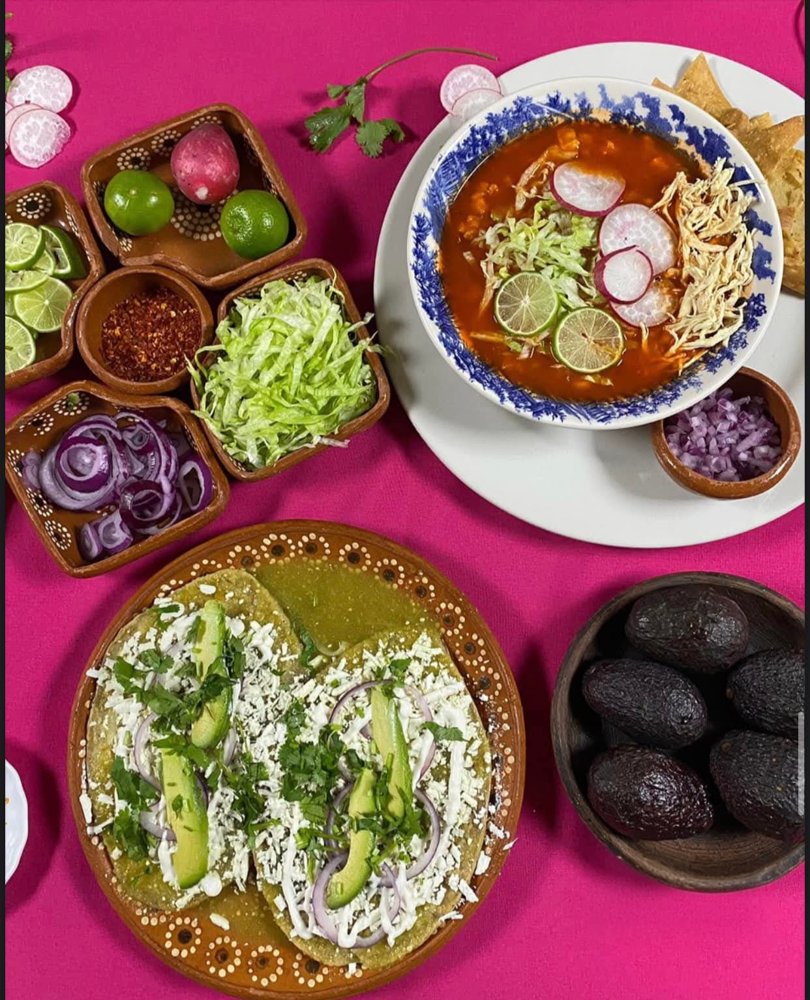
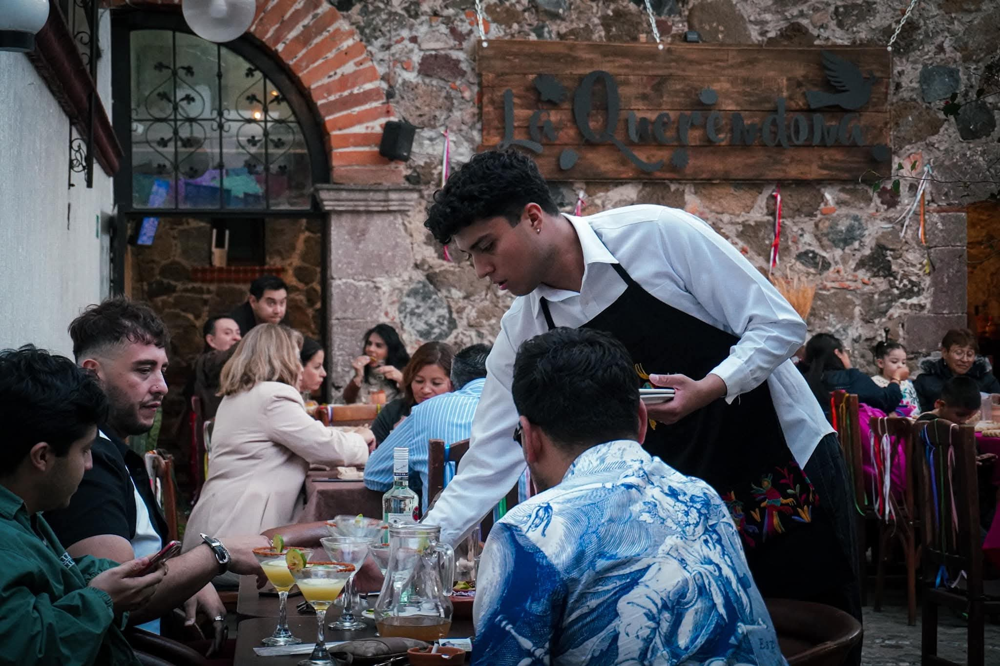

BIENVENIDO A
La Querendona
Sabor, tradición y un ambiente familiar en el corazón de Tepeapulco, Hidalgo Disfruta de una experiencia auténtica con comida que hace sentir como en casa.

Una experiencia única
En La Querendona buscamos ofrecer una experiencia cálida y auténtica, mezclando tradición mexicana con un ambiente moderno y acogedor.
Comida con tradición
Cada platillo está preparado con dedicación y sabores tradicionales para compartir momentos especiales con familia y amigos.
DESTACADOS

Comida tradicional
Platillos preparados con recetas auténticas y sabor casero.

Eventos y reuniones
Espacios ideales para convivencias familiares y celebraciones.

Servicio rápido
Atención rápida y ambiente cómodo para disfrutar sin prisas.
Especialidades
Sobre nosotros
La Querendona es un restaurante pensado para compartir buenos momentos, disfrutar comida deliciosa y mantener viva la esencia de la cocina mexicana.
Nuestro objetivo es brindar un ambiente cálido, familiar y lleno de sabor.
Conócenos →